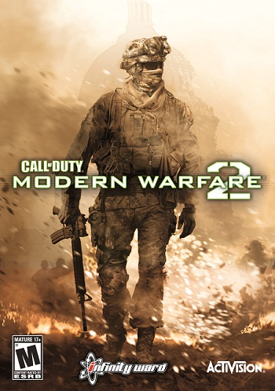
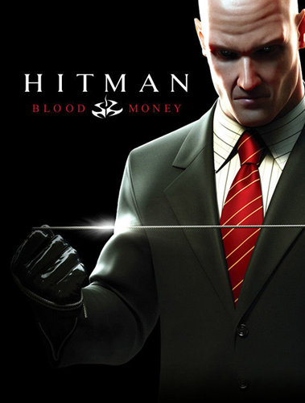
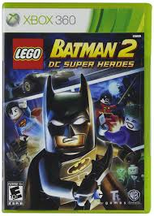
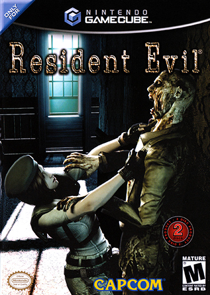
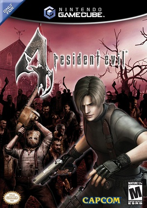
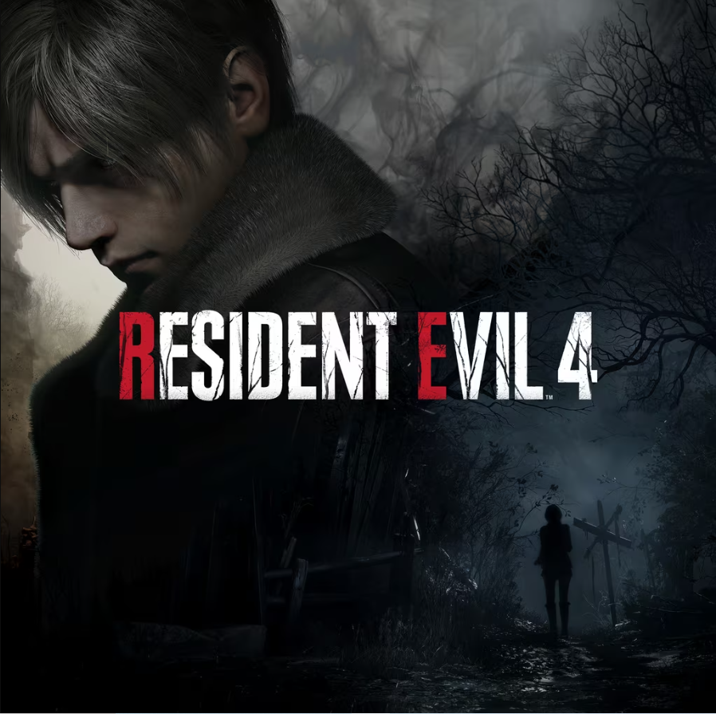
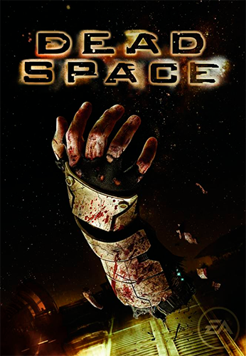

Lista de jogos platinados, Ranqueando de acordo com a dificuldade da platina!
Farcry 3
Essa foi a minha primeira platina, ela foi feita em 2020, esse jogo é bem tranquilo de platinar, não tem conquista perdivel, tem coletavel, mas você não precisa pegar tudo, não tem nenhuma conquista de grind, só de zerar o jogo você já libera 80% das conquistas, o que pode complicar são as missões em coop, porque elas só podem ser feitas localmente, então se você não tiver alguem pra jogar junto que mora perto da sua casa, a platina se torna inviável.
dificuldade da platina: 3
Plataformas disponíveis:
Xbox 360, Xbox One, Xbox Series S/X, PS3, PS4, PS5, PC
Assassins Creed Rogue
Platinei esse jogo em 2020, esse Assassins Creed é bem de boa de platinar, visto que ele não tem nenhuma DLC, a historia é bem curta, tendo apenas 6 capitulos (normalmente é 12), mas o que pesa mesmo é que é necessário completar 100% do jogo para platinar, mas novamente, o jogo é curto e não tem muito conteudo, é mais uma questão de tempo do que dificuldade

dificuldade da platina: 4
Plataformas disponíveis:
Xbox 360, Xbox One, Xbox Series S/X, PS3, PS4, PS5, PC
Call of Duty 4: Modern Warfare
Platinei esse jogo em 2022, essa platina é uma das mais dificieis que eu já fiz, para platinar o jogo basicamente é só zerar na dificuldade veterano, o problema é que esse jogo nessa dificuldade é muito difícil, mais do que os outros CODs, teve fase que eu demorei 2 horas para passar, além da fase bônus no fim do jogo que é outro desafio, mas fora isso, tem os colecionáveis nas fases para pegar, mas você pode diminuir a dificuldade para fazer, o que ajuda bastante

dificuldade da platina: 8
Plataformas disponíveis:
Xbox 360, Xbox One, Xbox Series S/X, PS3, PS4, PS5, PC, nintendo WII
Call of Duty Modern Warfare 2
Platinei em 2023, pega tudo que eu falei sobre o Modern Warfare 1, coloca aqui e adiciona um modo novo chamado special ops, esse modo adiciona várias fases que devem ser completadas cumprindo certos requisitos para ganhar estrelas, estrelas essas que são a sua pontuação na fase, indo de 1 à 3 estrelas, você deve pegar 69 estrelas no total para poder platinar e as últimas 3 fases desse modo são infernais de difícil, dá pra jogar em coop pra diminuir a dificuldade, mas mesmo assim, você vai levar muito tempo pra completar isso, mais tempo do que a campanha inteira do jogo leva.
dificuldade da platina: 9
Plataformas disponíveis:
Xbox 360, Xbox One, Xbox Series S/X, PS3, PS4, PS5, PC
Hitman Blood Money
Platinei em 2023, esse hitman é bem tranquilo de platinar, a maior dificuldade é zerar o jogo 4 vezes porque existe uma conquista de zerar o jogo pelo menos 1 vez em cada dificuldade existente, mas ele é bem curto, se você sabe o que tem que fazer, levando em torno de umas 3-4 horas cada zerada.
dificuldade da platina: 5
Plataformas disponíveis:
Xbox, Xbox 360, Xbox One, Xbox Series S/X, PS2, PS3, PS4, PS5, PC, Nintendo Switch
Cuphead
Platinei em 2024, eu achei Cuphead mais fácil do que imaginava, pórem, esse jogo ainda é bem desafiador, a conquista mais difícil é zerar o jogo na dificuldade especialista, que muda os movimentos dos chefes e aumenta sua velocidade, pórem, esse jogo é bem curto, dependendo da sua habilidade e conhecimento prévio dos chefes, você consegue zera-lo em um único dia.

dificuldade da platina: 6
Plataformas disponíveis:
Xbox One, Xbox Series S/X, PS4, PS5, PC, Nintendo Switch
GTA Vice City
Platinei em 2025, o maior desafio desse jogo são as missões de paramédico, elas são demoradas e se você capotar o carro ou matar algum paciente, você tem que refazer ela desde o início, tambem tem as conquistas perdíveis que são do modo história, pelo menos elas são simples, mas ter que iniciar um novo save só pra elas é bem chato.
dificuldade da platina: 8
Plataformas disponíveis:
Xbox, Xbox 360, Xbox One, Xbox Series S/X, PS2, PS3, PS4, PS5, PC, Nintendo Switch, Celular
GTA San Andreas
Platinei em 2023, Esse GTA não tem nenhuma conquista super difícil ou complexa, mas tem uma tive que usar um glitch para fazer, pois a versão do GTA san andreas de xbox 360 é bugada, o jogo roda a 60fps, mas isso faz que o CJ nade mais devagar, pois a animação de nado do jogo é 30fps, e tem uma atividade que é um triato por toda Los Santos, eu sempre ficava e, último por causa desse bug, então usei a jet pack para burlar o jogo e passei a parte do nado voando por cima do mar.

dificuldade da platina: 7
Plataformas disponíveis:
Xbox, Xbox 360, Xbox One, Xbox Series S/X, PS2, PS3, PS4, PS5, PC, Nintendo Switch, Celular
A Way Out
Platinei em 2025, Esse jogo é super de boa de platinar, as conquistas são 100% perdíveis, mas o jogo te dá a opção de voltar ao capitulo que você quiser, facilitando muito, e as conquistas também são super simples, tipo jogar video game dentro do jogo, achar uma sala secreta, etc.

dificuldade da platina: 2
Plataformas disponíveis:
Xbox One, Xbox Series S/X, PS4, PS5, PC
Batman Arkham City
Platinei em 2023, esse é um dos jogos mais cansativos de se platinar de todos os tempos. Você precisa zerar o jogo 2 vezes, fazer as DLCs, todos os desafios de combate e predador com todos os personagens (e pegar ranquing máximo em todos eles), pegar todos os trofeus do charada (são mais 400), além de ter que fazer 100% no jogo, fiz uma vez pra nunca mais.

dificuldade da platina: 10
Plataformas disponíveis:
Xbox 360, Xbox One, Xbox Series S/X, PS3, PS4, PS5, PC, Nitendo WII U, Nintendo Switch
Lego Batman 2
Platinei em 2023, esse jogo não é difícil de platinar, apenas muito demorado, você basicamente precisa fazer 100%, mas existem muitos coletáveis e fases diferentes para serem completadas, além dos coletáveis que ficam no mundo aberto.
dificuldade da platina: 7
Plataformas disponíveis:
Xbox 360, Xbox One, Xbox Series S/X, PS3, PS4, PS5, PC, Nintendo WII ,Nitendo WII U, PS Vita
Resident Evil 1 Remake
Platinei em 2022, essa foi uma das platinas mais divertidas que eu já fiz, você vai precisar zerar o jogo várias vezes pra conseguir, mas cada zerada você se aperfeiçoa e percebe que o level design desse jogo é um parque de diversões, o maior desafio foi zerar o jogo no modo que os inimigos ficam invisíveis.
dificuldade da platina: 7
Plataformas disponíveis:
GameCube, Xbox 360, Xbox One, Xbox Series S/X, PS3, PS4, PS5, PC, Nintendo Switch, Nintendo WII
Resident Evil 2 Remake
Platinei em 2024, esse resident tambem foi extremamente divertido de platinar, a maior dificuldade foi tirar rank S+ nas duas campanhas, mas depois que você pega o jeito as coisas ficam muito divertidas.

dificuldade da platina: 6
Plataformas disponíveis:
Xbox One, Xbox Series S/X, PS4, PS5, PC
Resident Evil 4
Platinei em 2021, Literalmente só tive que zerar o jogo 2 vezes, uma no normal e outra no profissional, e a DLC da Ada para platinar, definitivamente a platina mais fácil que eu ja fiz.
dificuldade da platina: 1
Plataformas disponíveis:
GameCube, Xbox 360, Xbox One, Xbox Series S/X, PS2, PS3, PS4, PS5, PC
Resident Evil 4 Remake
Platinei em 2025, esse remake é bem mais desafiador que a versão original para platinar, mas não é nada muito mirabolante, o maior desafio é pegar rank S+ na campanha do Leon e, especialmente, na campanha da Ada.
dificuldade da platina: 6
Plataformas disponíveis:
Xbox Series S/X, PS4, PS5, PC
Metal Gear Solid V: The Phantom Pain
Platinei em 2023, uma das platinas mais desafiadoras que já fiz, você precisa fazer 100% em basicamente tudo do jogo: pegar todos os animais, pegar todos os projetos de armas, fazer todos os objetivos secundários de todas as missões(tanto missões principais quanto secundárias), além de ter que upar a base para o nível máximo, e isso custa recursos que só podem ser pegos em grande quantidade no modo online do jogo.

dificuldade da platina: 10
Plataformas disponíveis:
Xbox 360, Xbox One, Xbox Series S/X, PS3, PS4, PS5, PC
Grounded
Platinei em 2025, essa platina é bem desafiadora, mas incentiva o jogador a fazer 100% do jogo, pois vários chefes e armas que você nem precisa enfrentar para zerar são conquistas únicas, minha reclamação é que uma conquista bugou e tive que baixa um mapa da internet para desbugar.

dificuldade da platina: 8
Plataformas disponíveis:
Xbox One, Xbox Series S/X, PS4, PS5, PC
Dead Space
Platinei em 2023, a maior dificuldade da platina é upar todas as armas no nível máximo, pois exige que o jogador zere o jogo mais de uma vez no mesmo save, de resto, é uma platina bem tranquila.
dificuldade da platina: 7
Plataformas disponíveis:
Xbox 360, Xbox One, Xbox Series S/X, PS3, PC
Clair Obscure Expedition 33
Platinei em 2025, o maior desafio do jogo é matar o Simon, mas tem uma forma de dar hitkill nele, então upar para o nível 99 é o maior desafio, mas mesmo assim existem partes que podem ser usadas como farm de XP, então é bem tranquilo.

dificuldade da platina: 5
Plataformas disponíveis:
Xbox Series S/X, PS5, PC
Subnautica
Platinei em 2025, a maioria das conquistas são fáceis de fazer, apenas requerem que o jogador zere o jogo, o complicado é descobrir o que fazer na sua primeira jogatina.
dificuldade da platina: 6
Plataformas disponíveis:
PS4, PS5, Xbox One, Xbox Series S/X, Nintendo Switch, PC